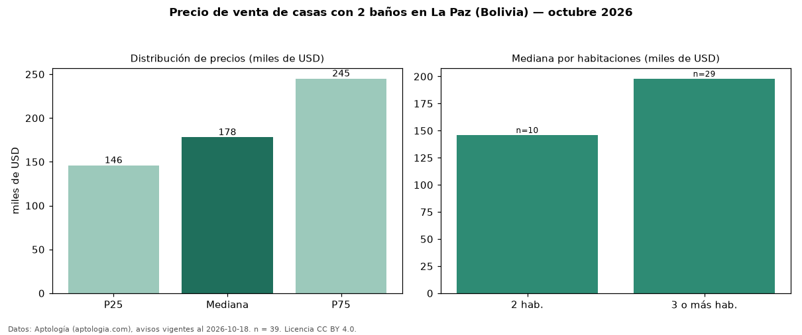

Precio de venta de casas con 2 baños en La Paz (Bolivia) — octubre 2026
USD 178.000 es el precio mediano de casas con 2 baños en venta en La Paz (Bolivia) (n = 39 avisos). Eso es 48 % menos que la mediana de todas las casas en venta de La Paz (USD 343.000, n = 339); este segmento reúne el 12 % de esos avisos. Por metro cuadrado, la mediana es USD 941/m² (n = 38), 5 % por debajo del conjunto de referencia (USD 990/m²). El área mediana anunciada es 180 m². El segmento con más oferta es el de 3 o más habitaciones (29 avisos, mediana USD 198.000); pasar de 2 habitaciones a 3 o más habitaciones cambia la mediana +36 %. La mitad central de los avisos va de USD 146.000 a USD 245.000 (razón 1,7), una dispersión moderada. Datos: Aptología (aptologia.com), CC BY 4.0 — https://www.aptologia.com/bo/venta/la-paz. Archivos: PDF, CSV con las cifras y gráfica PNG.

| Avisos únicos | 39 |
|---|---|
| Percentil 25 | COP 145.999 |
| Mediana | COP 178.000 |
| Percentil 75 | COP 245.000 |
| Mediana por m² | COP 941 |
Fuente: avisos vigentes de portales inmobiliarios recopilados por Aptología, deduplicados (mínimo 30 avisos únicos por celda). Precios pedidos, no cerrados. Fecha: 2026-10-18.